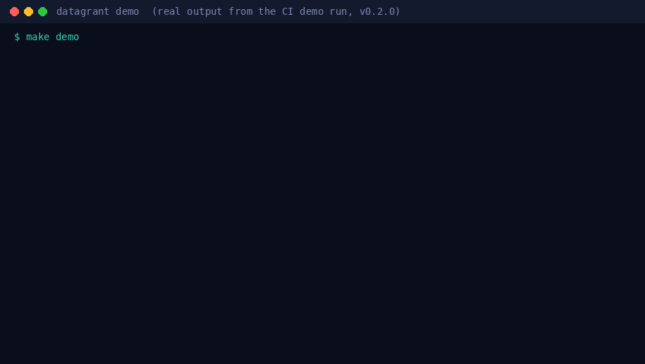

A command line tool that gives developers short, limited access to sensitive data. Each grant covers only the columns and rows they need, masks sensitive values, ends automatically, and leaves a signed record of who saw what.
Ask for specific columns and rows, for a set number of hours, with a reason. The policy decides, access ends on its own, and every step leaves a receipt.
Name the table, columns, row filter, duration, and purpose. A deny-by-default policy checks it.
When the policy requires it, someone else in an approver group must approve the request.
A masked view and a login role with an expiry. The developer connects with a one-time password.
A scheduled sweep revokes expired grants. Revoking locks the role out and closes open sessions.
Every grant, revoke, and expiry is written to a signed, hash-chained receipt log you can verify.
Narrow access becomes the easy option instead of the slow one.
Only columns listed in the policy can be requested, and tables can require a row filter.
Passthrough, redact, keyed HMAC hash, partial, or NULL, set per column.
Grants have a maximum duration set by policy, and the sweep cleans up anything expired.
Set approval to two-person so a second person in an approver group signs off.
Signed, hash-chained records of who saw what. Check the whole chain with one command.
Every command that changes something is a dry run unless you add --apply.
Real output from the project's CI demo run: masked rows, two-person approval, revoke, sweep and receipt verification.

# Needs Python 3.11 or later and Docker with the compose plugin $ git clone https://github.com/chriswayneh/datagrant && cd datagrant $ pip install -e . $ make demo # temporary Postgres 16 with fake patient data; tears down on exit
Each step prints a DEMO MARKER line, and a successful run ends with DEMO OK. See the demo guide.
Requires Python 3.11 or later and Postgres (tested on version 16). Try the demo, or point it at your own database.
# Install from GitHub $ pip install git+https://github.com/chriswayneh/datagrant.git # Against your database $ datagrant keys init --apply $ datagrant policy check policy.yaml $ datagrant preflight --apply $ datagrant request --dataset clinic --table public.patients \ --columns patient_id,zip --row-filter "region = 'west'" \ --duration 2h --purpose "debug model drift" --apply $ datagrant sweep --apply # run every minute from cron or systemd $ datagrant receipts verify
The demo ends with DEMO OK. Read the demo guide and the CLI reference.
Teams that need people to work with sensitive data without handing out broad, permanent access.
Get the columns and rows you need for a task, for a few hours, without waiting on a hand-built setup.
Support the HIPAA "minimum necessary" rule and data minimization for PII, with records you can verify.